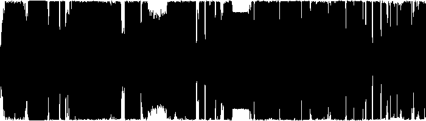
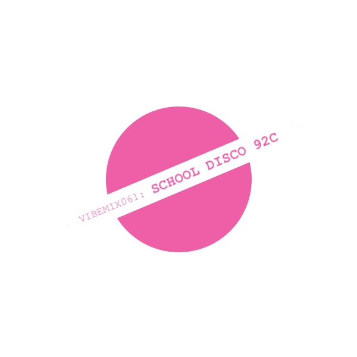

| VIBEMIX061: | SCHOOL DISCO 92C | ||
|---|---|---|---|
| 01 | Captain Hollywood Project | More and More | 00:00 |
| 02 | The Shamen | Phorever People (Beatmasters Heavenly Edit) | 04:03 |
| 03 | UDG | On Your Todd | 06:44 |
| 04 | CeCe Peniston | Finally | 10:32 |
| 05 | Felix | It Will Make Me Crazy | 14:03 |
| 06 | Central Line | I Like the Music Pumping (Radio Mix) | 15:41 |
| 07 | Ultracynic | Nothing is Forever | 17:15 |
| 08 | Rozalla | Everybody's Free (To Feel Good) | 20:46 |
| 09 | Datura | Yerba Del Diablo | 24:21 |
| 10 | Kid Unknown | Nightmare | 27:54 |
| 11 | Bass Bumpers | More to the Rhythm | 33:13 |
| 12 | Co.Ro feat. Taleesa | Because the Night | 35:55 |
| 13 | L.A. Style | I'm Raving (O Si Nene) (Long Version) | 39:54 |
| 14 | UDG | Heaven | 44:37 |
| 15 | SL2 | Way in My Brain | 48:46 |
| 14 | Baby D | Let Me Be Your Fantasy | 51:50 |
| 15 | Urban Hype | The Feeling | 55:46 |
| 14 | Altern 8 | Brutal-8-E | 57:46 |
| ℗ © 2026 | VIBERATIONS REC. |
|
 |
By the time 1992 reached this point, the
dancefloor was pulling in opposite directions. On one side, house
and Eurodance hit full clarity: big vocals, smooth piano lines,
and melodies designed to lift an entire room at once. On the
other, rave culture pushed harder and darker, with distorted
synths, breakbeat pressure, and tracks built less for charts and
more for sweat-filled floors. It’s no longer a single movement
but a spectrum—uplifting anthems sitting next to rave weapons,
optimism rubbing against intensity. This was the point where 1992
stopped being just energetic and started becoming
overwhelming. The result is a snapshot of a scene at full stretch—emotional, aggressive, melodic, and raw all at once—right before everything splintered even further. |